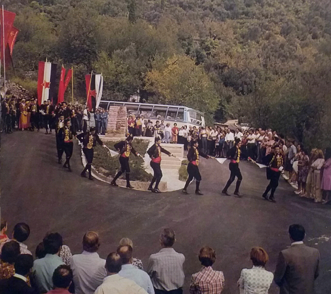
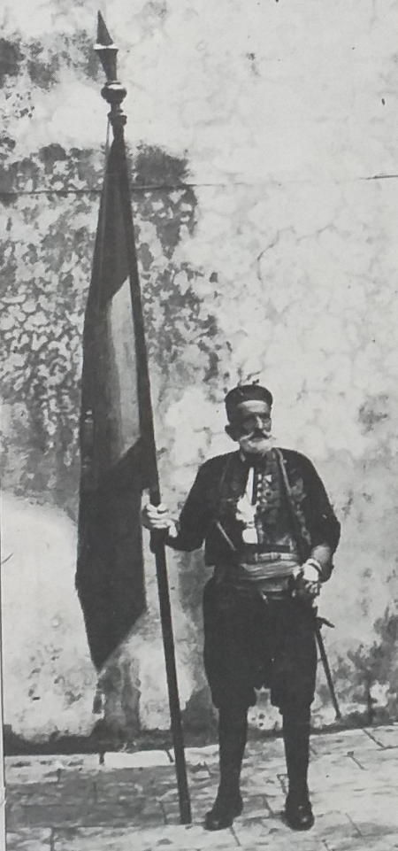
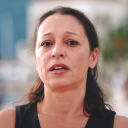
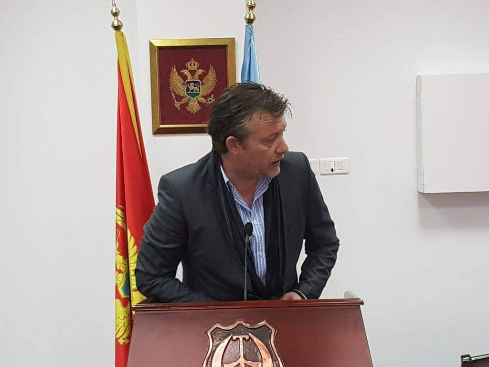
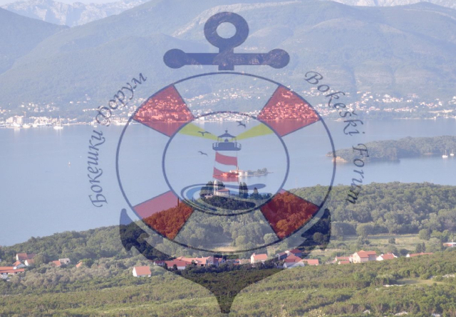
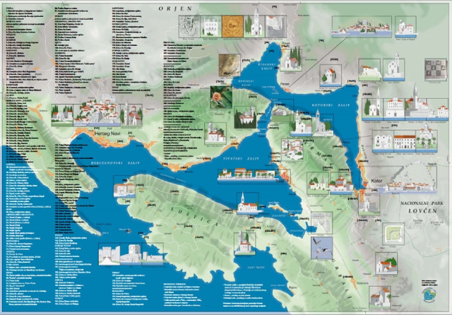
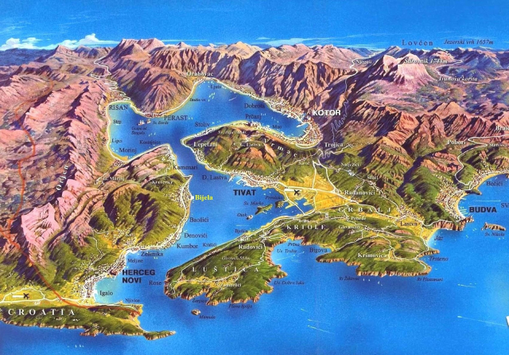
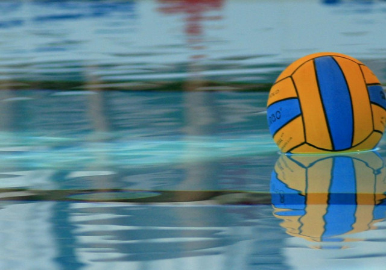

ISTORIJA BOKELJSKE MORNARICE U LASTVI I TIVTU

Kontakt
Bokeški Forum
- LUKA MASLOVAR
BOKELJSKA MORNARICA U LASTVI I TIVTU - LUKA MASLOVAR
Po predanju, Bokeljska mornarica osnovana je u IX vijeku (809. godine) i otada neprekidno djeluje kao najstarija organizacija pomoraca u nasoj zemlji i svijetu.
Intenzivno bavljenje pomorskom privredom stvorilo je od žitelja Boke Kotorske dobre pomorce, bradograditelje i hrabre ratnike.
Da bi obezbjedili plovidbene puteve oni su se vjekovima borili protiv najezda i okupacija. Zato se bas u Boki Kotorskoj, ranije nego u mnogim drugim primorskim krajevima, javila organizovana djelatnost pomoraca — Bokeljska mornarica.

Bokeljska mornarica svecanost
Pomorci su sticali teorijsko znanje u pomorskim školama u Perastu, Prčnju, Dobroti, Herceg Novom i Kotoru. Najstarija od njih je škola u Perastu (XVII vijek). U ovoj školi školovali su se i pitomci ruskog cara Petra Velikog, pod rukovodstvom poznatog pomorskog stručnjaka, kapetana Marka Martinovića. Zgrada u kojoj je bila škola danas je obilježena spomen pločom. Ovo nesumljivo svjedoči da je Bokeljska mornarica imala zasluga za osnivanje i opstanak mnogih pomorskih škola koje su doprinijele da bokelji budu cijenjeni u čitavom svijetu kao vješti i iskusni pomorci. Tokom XII vijekova svog postojanja Bokeljska mornarica je prošla kroz razne faze i kao organizacija pomoraca i kao organizacija koja je imala vojni karakter. Ona je učestvovala u raznim pomorskim bitkama, te bivala povremeno od nekih vladajućih režima u svojoj djelatnosti zabranjivana, ali nikada uništena; njeni članovi — pomorci uvijek su pronosili slavne tradicije pomorske i revolucionarne prošlosti Boke Kotorske. I u doba dok su Nemanjići vladali Bokom, Bokeljska mornarica je predstavljala borbenu snagu protiv napadača.
Odred Bokeljske mornarice u Tivtu sa majorom Božidarom-Darom Petkovićem
I car Dušan je u svojim planovima za osvajanje Carigrada računao na velikobokeljsku mornaricu, sto svjedoči da je ona bila i vojna organizacija na čijem je čelu stajao admiral sa oficirskim kadrom.
Bokelji su vjekovima ima živjeli pod tudinom, ali nijesu nikada prestali, uprkos svim pokušajima da budu ometeni, da se bore za očuvanje svog socijalnog i moralnog integriteta, njegujući tendencije bratstva i jednistva sa ostalim našim narodima.
Skupština Bokelja i Crnogoraca održana u Dobroti 29.X 1813. godine, predstavlja jaku narodnu manifestaciju na kojoj se po prvi put pominje ideja jugoslovenstva, a u radu Skupšine uzela je učešća putem svojih predstavnika i Bokeljska mornarica.
U revolucionarnoj 1848. i 1869. godini, u svim bunama i ustancima u kojima su Bokelji učestvovali protiv austrougarske vladavine, i članovi Bokeljske mornarice imali su aktivnu i zapaženu ulogu.
Kada je na Skupštini narodnih predstavnika Boke, 13. juna 1848. godine u Prčnju, usvojena deklaracija da je Boka za to da se sve države "sloveno-srpske" tj. jugoslovenske, ujedine, ova ideja potekla je od predstavnika Bokeljske mornarice jer su oni bili najaktivniji učesnici Skupštine. U čast Skupštine bilo je ispred Prčanja usidreno 40 brodova, okićenih narodnim trobojnim zastavama. Topovskom paljbom pozdravljena je deklaracija o ujedinjenju.
Sedamnaest godina kasnije, u vrijeme stvaranja jugoslovenske države 1918. godine, član Bokeljske mornarice, admiral do rata 1914. godine, Rudolf Đunio iz Prčanja, bio je član Jugoslovenskog odbora u Londonu.
Februara 1918. godine, kao eho Oktobarske revolucije, izbio je poznati ustanak mornara na 40 ratnih brodova austrougarske flote, stacioniranih u Boki Kotorskoj. U Arsenalu su radnici tom prilikom prekinuli rad i pridružili se manivestacijama ustanika. Među nima bilo je i aktivnih mornara i oficira Bokeljske mornarice. I na godišnjicu ovog značajnog ustanka radnici Arsenala popunili su sva mjesta u tender "Marljivi" i crvenim karanfilima i vijencem ukrasili grobnicu streljanih revolucionara.
Mornari bokeljske mornarice 1866. godine
Razvojem pomorstva i brodogradnje u Lastvi i Tivtu Razvijala se i Bokeljska mornarica. Pomorci ovog kraja regrutovani su vijekovim u kororsku i druge mletačke galije. U XVII vijeku pomorci iz Lastve služili su na peraškim brodovima koji su korišteni za dobranu od Turaka, kao i za prevoz državne pošte do Venecije a ponekad i do Carigrada.
Lastovljansko pomorstvo je na vrhuncu u periodu od 1705. do 1797. godine. Tokom 92 godine postojanja u ovom razdoblju ono posjeduje 23 veća i manja jedrenjaka, sa 25 patruna i 2 kapetana. Brodarstvo lastovljanske duge plovidbe u XIX vijeku nastavija rad brodovima koji su pripadali Tomanovićima iz Lepetana, a od kojih je jedan broj nastanjen u Lastvi. Ostali Lastovijani posjedovali su u ovom vijeku 5 brodova duge i velike obalske plovidbe i imali 13 kapetana. Nakon propasti jedrenjaka, Lastovijani plove na raznim parobrodima tršćanskih društava da bi se izgradnjom Arsenala Ratne mornarice u Tivtu sve više u njemu zapšljavali, zajedno sa stanovnicima Tivta i okolnih mjesta.
Mornari bokeljske mornarice 1905. godine
Stanovnici Lepetana upućivali su se još od najstarijih vremena na pomorstvo. Poeetkom XVII vijeka pominju se Lepetanci kao mornari peraških brodova i radnici brodogradilišta, a kao brodovlasnici i kapetani pominju se poslije pada Mletačke Republike, najprije u popisu bokeljskih brodova i kapetana iz 1807. godine. Tada se pominje bark "Triofente" (88t) kap. Vicka Miholovića, brod "Ortolano" (64 t) patruna Marka Tomanovića i trabakul "Koro" patruna Luke Ilića. Lepetanci su kroz XIX vijek posjedovali 27 brodova duge i obalske plovidbe.
Mornari bokeljske mornarice 1912. godine
Pomorci Lepetana istakli su se u Ruskoj i Argentinskoj trgovačkoj mornarici kao i na parobrodima austrijskog "Lojda". Isto tako Lepetanci su bili vrsni ribari, najbolji poznavaoci ribarskih posta u čitavom Bokokotorskom zalivu.
U Tivtu je komanda Austrijske ratne mornarice izgradila pomorski Arsenal 1889. godine. Optinsko vijeće pod predsjedništvom Marka Filipova Krstovića, na sjedinici 24. 03 1889. godine, donijelo je jednoglasno odluku da se dodijeli Mornarici besplatno zemljište za izgradnju brodogradilišta, sto je imalo ogroman značaj za život stanovništva ovog kraja.
Mornari bokeljske mornarice 1930. godine
Pri tom je predstavniku Mornarice naglašeno "da svi mještani treba da imaju prvenstvo prilikom prijema na rad." Od svog osnivanja pa do danas, brodogradilište - Arsenal se stalno razvija i sada spada medu najveće remontne zavode u našoj zemiji i omogućava veliki broj radnih mjesta.
Pri Arsenalu u Tivtu 1921. godine osnovana je Zanatlijska škola mornarice. Učenje u njoj trajalo je 3 godine. Ova škola je radila neprekidno sve do današenje reforme školstva. U njoj su stekli stručno znanje stotine današnjih brodograditelja, od kojih su mnogi na rukovodećim položajima u drugim nasim brodogradilištima.
Izgradnjom Arsenala Tivat je postao pomorski grad i stekao je uslove za dalji razvoj. U Tivtu je 1928. godine osnovana Slobodna bokeljska plovidba SOJ koja je imala dva teretna broda sa ukupno 3 344 BRT. Plovidba je likvidirana 1933 i godine prodajom brodova na dražbu.
Mornari bokeljske mornarice 1936. godine
Bokeljska mornarica najvisše je regrutovala mornara i oficira iz Lastve. Barjaktar Mornarice biran iz Lastve. Jedan od najpoznatijih barjaktara bio je Mato Ivović zvani Lastavica. Nosio je neprekidno barjak Bokeljske mornarice preko 50 godina - sve do 1910. godine. Poslije Ivovića za novog barjaktara izabran je Đuro Nikolić, zatim Šimun Nikolić, a danas je Ivica (Gracije) Nikolić, koji to tradiciju nastavija.
Lastovljanski mornari su u odorama i pod oružjem nastupali u Lastvi prilikom značajnijih svečanosti. Oni su takode prilikom sahrane mornara Bokeljske mornarice u kompletnoj odori i pod oružjem držali počasnu stražu i bili u sprovodu.
Mornare iz Lastve i Tivta pri nastupima na proslavama u Kotoru i lokalnim nastupima pratile su žene i djevojke, svečano odjevene u poznatoj lastovskoj odori.
Mornari bokeljske mornarice 1866. godine
Iz sačuvane fotografije vidi se da je na proslavi 1. 02. 1866. godine u Kotoru bilo 18 mornara i oficira iz Lastve. Takode iz foto dokumentacije se vidi da je na proslavi 1. 02. 1905. godine u Kotoru bilo 16 mornara i oficira iz Tivta, medu kojima i mali admiral. To govori da su pomorci Lastve i Tivta bill aktivni u Bokeljskoj mornarici.
Bokeljska mornarca je u prošosti imala svoju glazbu - pleh muziku, koja je u Kotoru, na proslavi 01. 02. 1903. godine, nastupila u sastavu od 36 glazbara - mornara Bokeljske mornarice.
Tekst za tradicionalno kolo Bokeljske mornarice napisao je krajem prošlog vijeka Pavo Božov Kamenarović, pomorski kapetan iz Dobrote. Kolo ima 12 figura. Plešu ga mornari u odori Bokeljske mornarce uz pratnju pleh muzike.
Nakon kapituiacije Jugoslavije 1941. godine, okupator je u Boki želio da za svoje interese mobiliše Bokeijsku mornaricu. U tom cilju vršen je snažan pritisak na članove Mornarice, kao i na njenog admiraia Rudolfa Đunija. On je ovakve zahtjeve energično odbio, tako da je Bokeljska mornarica prestala sa svakomm aktivnošću dolaskom okupatora u našu zemlju. Članovi Mornarice, svjesni činjenice da će okupator vršiti teror i pljačku imovine, odmah su odoru i oružje sklonili na sigurna mjesta.

Mato Ivovic, zvani Lastavica, iz Lastve nosio je barjak Bokeljske mornarice preko 50 godina bez prekida
Članovi Bokeljske mornarice dali su dostojan doprinos narodno oslobodilačkoj borbi. Sa područja Lastve i Tivta preko 50 ih je bilo neposredno uključeno u pokret, a 20 ih je prošlo kroz zatvore i koncentracione logore. U borbama protiv neprijatelja poginulo je ukupno 23 clana Bokeljske mornarice, među kojima ima i mornara iz Lastve i Tivta.
Poslije oslobodenja naše zemlje pristupilo se radu na izradi novog Statuta Bokeljske mornarice. Skupština Bokeljske mornarice 30. avgusta 1964. godine usvojila je novi Statut. Bokeljska mornarica je za svog admirala izabrala akademika prof. dr Vladislava Brajkovića iz Perasta, redovnog profesora Pravnog fakulteta Sveučilišta u Zagrebu. Zbog pomaganja narodnooslobodilačkog pokreta, bio je od strane okupatora hapšen i proganjan. Kao istaknuti naučni radnik izabran je za člana Jugoslavenske akademije znanosti i umjetnosti u Zagrebu. Isto tako, prilikom osnivanja Crnogorske Akademije nauka u Titogradu izabran je za njenog člana. Pored svoje naučne djelatnosti Brajković je dao znatan doprinos na polju našeg i međunarodnog pomorskog prava.
U socijalističkoj Jugoslaviji Bokeljska mornarica aktivno se uključila u rad Socijalističkog Saveza radnog naroda kroz programe proslava istorijskih praznika i drugih značajnih manifestacija, prestavljajući se svojim tradicionalnim kolom.
Članovi Bokeljske mornarice učestvovali su na proslavama i van Boke: na Cetinju, u Beogradu, Zagrebu, Splitu, na Rijeci, u Kumrovcu, Dubrovniku, Podgori, Baru i drugim mjestima.
U proslavi 30-godišnjice Jugoslovenske ratne mornarice, odžanoj 10. septembra 1972. godine u Podgori, najbrojnije su bili zastupljeni u odredu Bokeljske mornarice mornari iz Lastve i Tivta.
Na proslavi u Podgori izaslanik Predsjednika Socialističke Federativne Republike Jugoslavije uručio je Bokeljskoj mornarici Orden bratstva i jedinstva sa zlatnim vijencem.
Dodjeljivanjem ovog visokog odlikovanja Bokeljskoj mornarici istodobno je odato priznanje svim Bokeljima za njihov doprinos u razvijanju bratstva i jedinstva medu našim narodima i narodnostima, a to ih je još više obavezalo da i dalje stalno njeguju i razvijaju svijetlu tradiciju i velike tekovine narodnooslobodilačke borbe i revolucije.
Bokeljska mornarica redovno prisustvuje tradicionalnim Dubrovačkim ljetnim igrama, najvećoj kulturnoj manifestaciji u Jugoslaviji.
Bokeljska mornarica je na Skupštini održanoj 1962. godine uzela za svoj dan 10. septembar i redovno ga proslavlja sa Jugoslovenskom ratnom mornaricom.
Podružnice koje su formirane u Tivtu, Kotoru i Herceg-Novom takode su uzele za svoj dan proslave druge značajne datume. Tako je Podružnica Bokeljske mornarice Tivat uzela za svoj dan 17. april u znak sjećanja na junački podvig narodnih heroja poručnika bojnog broda Milana Spasića i Sergija Mašere, koji su minirali razarač "Zagreb" 1941. godine, da ne padne u ruke italijanskog okupatora i sa njime potonuli u plavu grobnicu.
Bokeljska mornarica je posebno počašćena 5. januara 1973. godine, prijemom svoje delegacije kod druga Tita u Miločeru. Tom prilikom delegacija je uručila Titu odoru admirala Bokeljske mornarice i ediciju "12 vjekova Bokeljske mornarice". Drug Tito se tada prihvatio zvanja doživotnog počasnog admirala. Bokeljskoj mornarici je ovim činom ukazana velika čast i priznanje za njenu svijetlu prošlost, uz obavezu da i dalje nastavi da djeluje u duhu svojih velikana; Jerolima Bizantija, Marka Martinovića, Matije Zmajevića, Tripa Smeće, Braće Joza i Marka Ivanovića, Petra Želalice, Ivana Vizina, Spiridona Gopčevića, Miloša Vukosavića i mnogih drugih koji su pronijeli slavu Jugoslovenskog pomorstva širom svijeta.
Osnivanje Podružnice Bokeljske mornarice u Tivtu 1972. godine, znatno je pospiješilo rad Mornarice u ovoj opštini. Formiran je odred aktivnog sastava Podružnice koji danas broji 80 mornara. Odredom zapovijeda komandir odreda u činu oficira Bokeljske mornarice. Odred ove i ostalih podružnica zajednički čine Glavni odred Bokeljske mornarice. Odred podružnice nastupa u sastavu Glavnog odreda i samostalno, a u duhu pravilnika o nastupima aktivnog sastava Bokeljske mornarice. Odred u Tivtu ima kompletnu novu odoru i priličan broj starinskih pušaka.
Podružnica u Tivtu ima svoje pravilnike koji proističu iz odredaba Statuta Bokeljske mornarice. Za članove Predsjedništva Bokeljske mornarice ova podružnica bira svoje delegate u istom broju kao i podružnice iz drugih krajeva Boke Kotorske.
Za njenu redovnu djelatnost i za nabavku oružja Skupština opštine Tivat ranije, a danas Samoupravna interesna zajednica za kulturu i umjetnost svake godine obezbjeduje potrebna sredstva, pa se ova saradnja Podružnice sa Skupšinom opštine i društveno-političkim organizacijama može istaći kao primjerna.
U odredu Podružnice Bokeljske mornarice u Tivtu ima, pored mornara, prvi major, jedan prvi poručnik, te 8 poručnika i 6 mlađih oficira. Skoro polovina pripadnika odreda obučeni su za ples tradicionalnog kola Bokeljske mornarice, koji vodi kolovoda odreda i njegov zamjenik kada odred Podružnice samostalno nastupa. Vrijedno je istaći da su omladinci opštine Tivat veoma zainteresovani da budu primljeni u aktivan sastav odreda, pa Podružnica u tom smislu stalno vrši nabavku potrebnih odora i starinskog oružja.
Podružnica u Tivtu ima preko 1000 redovnih članova čiji se broj stalno povećava. Sa Jugoslovenskom ratnom mornaricom u Tivtu Podružnica aktivno saraduje i zajednički proslavlja istorijske praznike i druge značajne datume.
Pripadnici odreda iz Tivta su u sklopu Glavnog odreda Bokeljske mornarice redovno u Kotoru dočekivali šefove država i druge ličnosti koji su došli u zvančnu i prijateljsku posjetu našoj zemlji. Izmedu ostalih ukazana je počast komandantu flote SSSR-a admiralu Gorskovu, u ljeto 1967. godine, komandantu Crnomorske flote SSSR-a admiralu Čursinu 01. 02. 1968. godine, prilikom proslave 50-godišnjice ustanka mornara u Boki. U proljeće 1968. godine Boku Kotorsku je posjetio predsjednik, Državnog Savjeta Socijalističke Republike Rumunije Nikolae Čaušesku, a u junu iste godine engleska princeza Margareta sa svojim suprugom. Predsjednik vlade Šri Lanke, gospođa Sirimao Bandaranaike, 21.03.1976. godine posjetila je Boku, a japanski princ Akihitu sa suprugom u junu 1976. godine.
Predsjednik Državnog Savjeta Republike Gvineje Bisao drug Luiz Kabral, istaknuti borac za oslobođenje naroda Afrike od kolonijalizma, kao gost Predsjednika Socijalistčeke Federativne Republike Jugoslavije Josipa Broza Tita, 1. juna 1976. godine posjetio je Boku Kotorsku. Tom prilikom Bokeljska mornarica je ovog revolucionara proglasila za počasnog admirala Bokeljske mornarice. Admiralske časti — odoru, štap i zlatnu Povelju, u aprilu 1979. godine uručila mu je svečano u Gvineji Bisao delegacija Bokeljske mornarice.
Admiral Mate Jerković, pocasni gradjanin Tivta u društvu s Božom Žarkovićem, admiralom JRM, Božidarom-Darom Petkovićem, predsjedikom SO, Vladom Meštrovićem, sekreterom Opštinskog komiteta SK, Stjepanom Perakom, oficirom i članovima Odreda Bokeljske mornarice, 1957. godine.
Danska kraljica Margareta sa suprugom, koja ie došla u zvaničnu i prijateljsku posjetu Jugoslaviji posjetila je Boku. Takođe i kancelar Savezne Republike Njemačke Helmut Šmit. To su učinili kasnije i predsjednik Republike Avganistana Muhamed Dand i drugi državnici koji su u poslednjih nekoliko godina bili u zvaničnoj i prijateljskoj posjeti našoj zemlji. Svim državnicima Bokeljska mornarica je prilikom dočeka priredila uobitajčajni ceremonijal sa tradicionalnim kolom. Svi su bill dirnuti dočekom i ispraćajem koje im je priredila Bokeljska mornarica.
Odred Podružnice Bokeljske mornarice u Tivtu samostalno je nastupio na proslavi Podružnice Bokeljske mornarice u Splitu februara 1975. i 1976. godine.
Odred Podružnice samostalno nastupa svake godine 21. novembra na dan oslobodenja Tivta. Isto take odred samostalno nastupa na sve značajnije istorijske i kulturne proslave u Tivtu i Lastvi i, uz uobičajeni ceremonijal redovno sa učesnicima proslave začini predstavu tradicionalnim kolom Bokeljske mornarice.
Odred podružnice iz Tivta redovno je u sastavu Glavnog odreda Bokeljske mornarice svečano dočekivao i ispraćao svog počasnog admirala druga Tita prilikom njegovog dolaska u Igalo i kada je posjećivao Kotor i Tivat.
Smrt Druga Tita potresno je i bolno odjeknula medu nama mornarima, ali njegovo ime vječno će živjeti u srcima svih mornara Bokeljske mornarice.
Pripadnici Bokeljske mornarice dali su obećanje da će čvrsto čuvati tekovine narodnooslobodilačke borbe i socijalističke revolucije i nastaviti put izgradnje samoupravnog socijalizma koji je trasirao drug Tito.
Članovi Bokeljske mornarice iz Tivta izvode svoje kolo.
Pored druga Tita, Bokeljska mornarica je promovisala za svog počasnog admirala Veljka Milatovića, Predsjednika Predsjedništva Socijalističke Republike Crne Gore i za vice admirala akad. prof. dr Branka Pavićevića, predsjednika Crnogorske akademije nauka i umjetnosti. Ovo visoko priznanje koje im je dodijelila Bokeljska mornarica oni su zaslužili svojim dopinosom razvoju pomorstva Crne Gore i afirmaciju Bokeljske mornarice.
Aktivnost članova Bokeljske mornarice, Tivatske podružnice i dalje se intenzivno nastavlja.
Izvor: Tivat monografija - grupa autora
Građanska Boka u građanskoj Crnoj Gori naš je imperativ.
Jer Crna Gora je naša država, a Boka je naš dom.
Sve
Vijesti
Akcije
Ostalo



Sandra Sindik (Bokeški Forum): Skupština CG da izglasa jun u oktobru
Detaljnije


DR ANDRIJA PETKOVIĆ (BOKEŠKI FORUM): BJEŽE OD IZBORA I NEČISTE SAVJESTI
Detaljnije

Bokeški Forum: Odlaganje izbora predstavlja klasični oblik pravnog nasilja
Detaljnije
PREVAZILAŽENJE VJERSKIH I NACIONALNIH RAZLIKA (UJEDINJENJE BOKELJA)
Detaljnije

ZABRANA PRIVATIZACIJE INSTITUCIJA OD LOKALNOG I REGIONALNOG ZNAČAJA
Detaljnije

UKIDANJE JP “MORSKO DOBRO”
Detaljnije


ZNAČAJNIJA ULAGANJA U SPORT
Detaljnije

STOP PARTIJSKOM ZAPOŠLJAVANJU
Detaljnije

Biće nam čast i zadovoljstvo da nam se pridružite i radite sa nama.